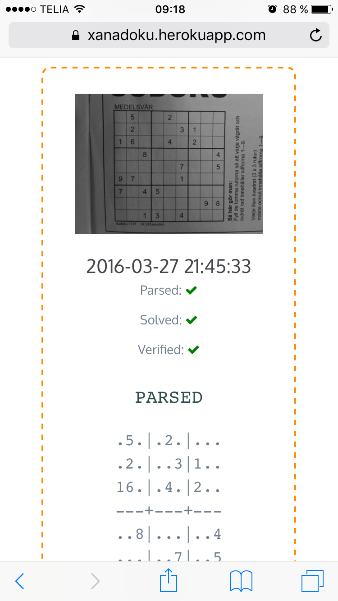

The Point of Pointless Projects
Henrik Blidh
M.Sc.Eng.Math.
|
|
|
|---|---|---|
@hbldh |


Hello and welcome to this presentation called The Point of Pointless Projects.
I am going to tell you about soem spare time programming projects of mine and from them try to extraoplate some insights about such projects in general.
My name is Henrik Blidh, I have a Master's Degree in Engineering Mathematics and this is you you can get in touch with me later on.
About me

This is me, my programming history.
I started out in Matlab, duing the early stages of my education.
Later courses branched out into Java and C, but my main language was still Matlab, which I regarded as kind of a necessary evil.
I started working in 2008, still coding in Matlab, and I was aquainted with Python first in 2010, when a newly hired employee suggested that we should port our code to get better maintainablility. Since I hade built a distributed computational cluster in Matlab and C# and felt that it was unnecessarily complex, I felt that it might be a good idea and I haven't looked back since.
Introduction
This talk will present four years worth of spare time coding, focusing very little on the actual code written but rather describing both the intented and unintended effects of the coding.
This talk will present four years worth of spare time coding, focusing very little on the actual code written but rather describing both the intented and unintended effects of the coding.
Almost all projects lead to some kind of increase in knowledge, but I will not list all the things I learned during the projects. If I did I would talk all day and you would find it tremendeously boring...
- The true onset of my love for coding came after I started feeling comfortable with Python.
- I find Python exceptional in its potential for rapid development and that one can get quite a lot done in half an hour before bed or during commuting to and from work.
What constitutes a pointless project?
N.B. this is a personal, incomplete, definition!
Required properties
- Little or no use to general public
- Created for either
- educational purposes
- artistical purposes
- lulz
Optional properties
- Very time consuming
- Solving simple task in complex and/or complicated fashion
- Being the "wrong" way of performing the issue at hand
- Addressing aspects of an issue not often scrutinized
What constitutes a pointless project?
N.B. this is a personal, incomplete, definition!
- Little or no use to general public
- Created for either
- educational purposes
- artistical purposes
- lulz
- Very time consuming
- Solving simple task in complex and/or complicated fashion
- Being the "wrong" way of performing the issue at hand
- Addressing aspects of an issue not often scrutinized
Any Sudoku solver ever written

DLXSudoku
Sudoku Solver in pure puthon, no dependencies.
When it was done, I realised that I would never use it since I would have to enter the Sudoku to solve manually.
 hbldh/dlxsudoku
hbldh/dlxsudoku
hbldh@devbox ~ $ solve-sudoku --sudoku "030467050920010006067300148301006027400850600090200400005624001203000504040030702" 138|467|259 924|518|376 567|392|148 ---+---+--- 351|946|827 472|851|693 896|273|415 ---+---+--- 785|624|931 213|789|564 649|135|782
Desired output: Sudoku Solver
Unexpected output:
SudokuExtract
hbldh/sudokuextract

SudokuExtract
hbldh/sudokuextract

SudokuExtract
hbldh/sudokuextract
SudokuExtract
The idea:
- Using scikit-image (since opencv for Python complicated to install)
- Needs some OCR solution for detecting digits.
After doing some failed tests with Tesseract I decided to do it myself.
Read some papers. Decided on Elliptical Fourier Descriptors and Machine Learning.
hbldh/sudokuextract
hbldh@devbox ~ $ parse-sudoku --oneliner -p "sudoku.jpg" > "/tmp/sudoku.txt" && solve-sudoku --path "/tmp/sudoku.txt" 853|126|749 429|873|156 167|945|283 ---+---+--- 518|239|674 342|687|915 976|451|832 ---+---+--- 794|568|321 635|712|498 281|394|567
Desired output: Sudoku Image Parser
Unexpected output:
Elliptical Fourier Descriptors
hbldh/pyefd
Data from: LeCun et al. (1999): The MNIST Dataset Of Handwritten Digits
I did not find any good implementation of EFD online, so I wrote one.
EFD provides a means of representing a contour by an array of numbers, providing the means of applying a machine learning solution for classifying images into different digits.
SudokuExtract
It works decently well. I still haven't been able to handle photos of Sudokus on computer screens.
When this was done I realised that I would never use it since I would never have the energy to take a photo, save it to disk and run a command line tool on it just to solve a Sudoku
hbldh/sudokuextract
hbldh@devbox ~ $ parse-sudoku --oneliner -p "sudoku.jpg" > "/tmp/sudoku.txt" && solve-sudoku --path "/tmp/sudoku.txt" 853|126|749 429|873|156 167|945|283 ---+---+--- 518|239|674 342|687|915 976|451|832 ---+---+--- 794|568|321 635|712|498 281|394|567
Desired output: Sudoku Image Parser
Unexpected output:
Xanadoku
hbldh/xanadoku
|  |
|---|---|

Desired output: Sudoku Solver Web application
Unexpected output: None
BankID exploration project
hbldh/pybankid-example-app
>>> from bankid import BankIDClient >>> client = BankIDClient(certificates=('path/to/certificate.pem', 'path/to/key.pem'))
- I started writing the example app.
- Turned out no one written anything for BankID in Python, so I did it myself.
- Eventually it turned out that the bankid client became a useful, standalone component.
- The standalone component was more fun to write so I did that instead.
- SOAP, uses Suds.
- I also made a Flask extension of it.
- The example app behaviour exploration never really got done though...
Desired output: Flask web application for exploring use of BankID.
Unexpected output:
PyBerryIMU
I then built a Python package for recording data with it.
- The accelerometer needed calibration. I read some papers and implemented a method I liked. This worked so well that I broke it out as a separate package.
- My friend who was going to use it is not a programmer. I made a web interface for him and any other potential interested party.
hbldh/pyberryimu
Desired output: Python client for BerryIMU.
Unexpected output:
MetaWear
I backed two projects on Kickstarter during the prototype stage, so when I was done with the Raspberry stuff these little Bluetooth Low Energy sensor board beauties arrived on my doorstep!
|
|
|---|---|


They had iOS, Android and C++ APIs.
Guess if they had Python connectors?
During prototype stage, I backed two other projects on Kickstarter. By the time the previous sensor rig project was done these BLE boards arrived in the mail.
Guess if they had a Python conectors?
PyMetaWear
hbldh/pymetawear
This one is currently ongoing, so I cannot say very much about the unexpected output yet.
Desired output: Python client for MetaWear boards.
Unexpected output:
- Will probably yield at least one pull request to Python GATT communication libraries.
hbldh/pymetawear
This one is currently ongoing, so I cannot say very much about the unexpected output yet.
Desired output: Python client for MetaWear boards.
Unexpected output: Will probably yield at least one pull request to Python GATT communication libraries.
I play the violin.
I joined a folk music association in 2012.
I became treasurer immediately...
As I went deeper into the paperwork of the association I found that it held massive amounts of material (sheet music, member publications, paper clippings, audio interviews, video recordings, photos etc.) that no one benefitted from in their current state.
As a believer in online availability for all things I started thinking...
I play the violin.
I joined a local folk music association in 2012.
I became treasurer immediately...
As I went deeper into the paperwork of the association I found that it held massive amounts of material (sheet music, member publications, paper clippings, audio interviews, video recordings, photos etc.) that no one benefitted from in their current state.
As a believer in online availability for all things I started thinking...
Archive, version 1
- Flask web app deployed at Google App Engine.
- Stored data in MongoDB.
- Served files from Dropbox.
- Contained 1.5 GB of scanned material.
Desired output: Constantly available archive, running free of charge.
Unexpected output:
- 2 accepted pull requests to Flask-PyMongo
- 2 MongoDB certifications!
- Notice the past tense in the list above?
- Flask web app deployed at Google App Engine.
- Stored data in MongoDB.
- Served files from Dropbox.
- Contained 1.5 GB of scanned material.
Constantly available archive, running free of charge.
Unexpected output:
- 2 accepted pull requests to Flask-PyMongo
- 2 MongoDB certifications!
- hbldh/MongoLab-REST-GAE - REST API client for GAE
- Notice the past tense in the list above?
Archive, version 2
- Flask web app deployed at Heroku.
- Storing data in MongoDB.
- Serving files from Dropbox.
- Serving images from Cloudinary.
- Text searching in OCR-parsed material dating back to 1929.
- Contains 2.5 GB of scanned material.
Desired output: Constantly available archive, still running free of charge.
Unexpected output:
- PDF manipulation GUI.
- Lots of hugs from older members of the association. (Ok, not really unexpected.)
- Flask web app deployed at Heroku.
- Storing data in MongoDB.
- Serving files from Dropbox.
- Serving images from Cloudinary.
- Text searching in OCR-parsed material dating back to 1929.
- Contains 2.5 GB of scanned material.
Constantly available archive, still running free of charge.
Unexpected output:
- PDF manipulation GUI.
- Lots of hugs from older members of the association. (Ok, not really unexpected.)
Other projects during the same time
hbldh/skboost - Multiple Instance Learning boosting algorithm.
hbldh/b2ac - Ellipse fitting implemented in fixed point C!
nExtClient - Python client for Nordnet Bank's data API service. Not open sourced yet, needs unit tests first.
hbldh/skboost - Multiple Instance Learning boosting algorithm.
hbldh/b2ac - Ellipse fitting implemented in fixed point C!
nExtClient - Python client for Nordnet Bank's data API service. Not open sourced yet, needs unit tests first.